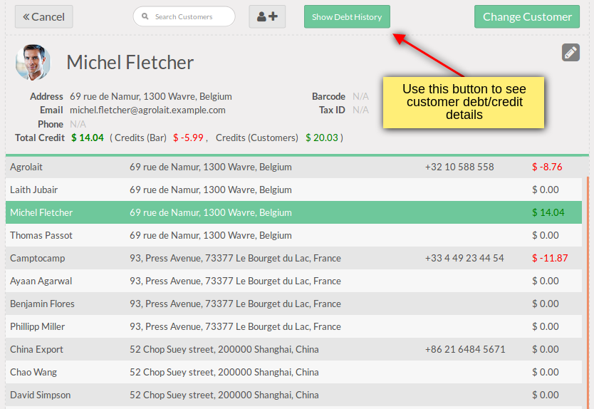

All the details about used debt transactions for the customer selected you can see by clicking on Show Debt History.

⇓

It's a good solution for:
The customer is able to pay some part by Cash and the rest by debt using available credit journal(s) (or pay all the order amount by debt). You may use as many credit journals as you wish.
You can easily put the customer change to his credit account if needed (e.g. if you wouldn't like to care about small change).
The button appears when you select customer, which has unpaid debt (red amount). You can see this button in 2 places:
Once you click Pay Full Debt button, the debt amount will be added to the payment list with negative sign. That negative amount has to be covered by normal payment (e.g. by cash). This payment should be more than total amount of current order (note that there must be at least one product in your order before payment can be validated, so in this case we recommend to use dummy zero price product). After payment validation, the customer will have zero debt value (i.e. he will have not any debt).
All customer debts/credits balances are shown on client list view
All the details about used debt transactions for the customer selected you can see by clicking on Show Debt History.
Open Point of sale → Configuration → Manual Credit Updates. Here you can manually manage with credit updates by creating new record or importing csv (xls) file. It may be used in following cases:
Group of partner from the same Company can be handling together. To do that open wizard via Invoicing → Sales → Generate POS Credits Invoices and set the fields:
In the employee list you can see Current Credits and set Credits to add
Then
As a result the Credits for employees are updated
To add a credit journal go to Point of Sale → Configuration → Payment Methods and check the box Credit Journal at Point of Sale tab for the journal you create.
In addition you can choose Debt Type (displaying method) in Point of Sale → Configuration → Settings menu:
Display Debt
Display Credit


Contact us by email or fill out request form